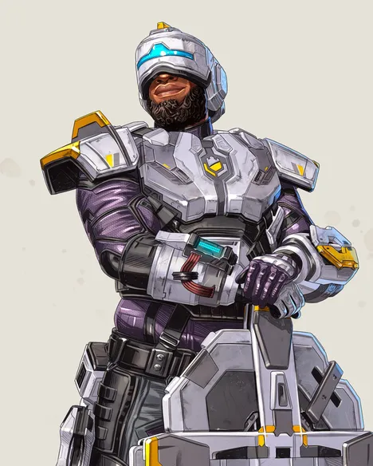

지브롤터(Gibraltar)
- 패시브-요새화 (Fortified)
- 받는 피해가 15% 감소합니다. 총에 맞아도 느려지지 않습니다.
- 패시브-건 실드 (Gun Shield)
- 조준으로 적의 사격을 막는 실드를 생성합니다.
- 전술-보호의 돔 (Dome of Protection)
- 외부 및 내부 공격을 막아줍니다.
- 얼티밋 스킬-방어 포격(Defensive Bombardment)
- 연막 표시 위치에 집중 박격포 포격을 요청합니다.
라이프라인(Lifeline)
- 패시브-전투 회생 (Combat Revive)
- D.O.C.를 배치하여 팀원을 회생시키며, 그동안 라이프라인은 자유롭게 움직이거나 방어할 수 있습니다.
- 전술-D.O.C 치유 드론 (D.O.C. Heal Drone)
- 드론이 자동으로 주위의 대상을 치료합니다.
- 얼티밋 스킬-케어 패키지 (Care Package)
- 고성능 장비로 가득 찬 드롭 포드를 소환합니다.
미라지(Mirage)
- 패시브-이제 내가 보이는가... (Now You See Me...)
- 부활 비컨을 사용하거나 팀원을 회생시키는 중 자동으로 은폐합니다.
- 전술-사이크 아웃 (Psyche Out)
- 홀로그램 미끼를 보내 적을 혼란시킵니다. 미끼 조작: [H]
- 얼티밋 스킬-파티의 주인공 (Life of the Party)
- 미라지가 조작 가능한 미끼들을 뿌려 적의 눈을 속입니다.
로바(Loba)
- 패시브-고급을 보는 눈 (Eye for Quality)
- 근처에 있는 에픽 및 전설 전리품을 벽 너머로 볼 수 있습니다.
시전 범위는 블랙 마켓 부티크와 동일합니다.
- 전술-도둑의 절친 (Burglar's Best Friend)
- 점프 드라이브 팔찌를 던져 도달하기 어려운 곳에 도달하거나 위험에서 빠르게 벗어납니다.
- 얼티밋 스킬-블랙 마켓 부티크 (Black Market Boutique)
- 근처 전리품을 인벤토리로 순간이동시킬 수 있는 휴대용 장치를 설치합니다.
아군 및 적군 레전드 한 명당 최대 2개까지 아이템을 가져갈 수 있습니다.
뉴캐슬(Newcastle)
- 패시브-요새화 (Fortified)
- 받는 피해가 15% 감소합니다. 총에 맞아도 느려지지 않습니다.
- 패시브-부상자 구조 (Retrieve the Wounded)
- 회생시킬 때 쓰러진 아군을 옮기면서 회생 실드로 보호합니다.
- 전술-모바일 실드 (Mobile Shield)
- 이동식 에너지 실드를 전개하는 드론을 투척합니다.
- 얼티밋 스킬-캐슬 월 (Castle Wall)
- 아군 또는 목표 지역으로 뛰어들어 강력한 요새를 생성합니다.

콘딧(Conduit)
- 패시브-세이비어 스피드 (Savior's Speed)
- 전술능력 범위 밖의 아군에게 달려갈 때 속도 부스트를 얻습니다.
- 전술-래디언트 트랜스퍼 (Radiant Transfer)
- 위험에 빠진 팀원에게 에너지를 날려 임시 실드를 부여합니다.
- 얼티밋 스킬-에너지 바리케이드 (Energy Barricade)
- 적에게 대미지를 주고 움직임을 느려지게 하는 실드 재머들을 배치 합니다.